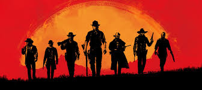
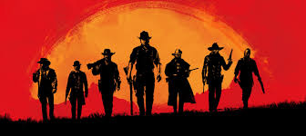
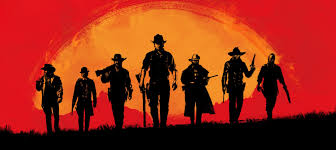
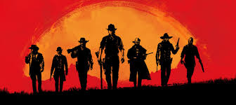

Red Dead Redemption 2 (estilizado como Red Dead Redemption II) é um jogo eletrônico de ação e aventura desenvolvido e publicado pela Rockstar Games. É o terceiro título da série Red Dead e uma prequela de Red Dead Redemption de 2010, tendo sido lançado em outubro de 2018 para Playstation 4 e Xbox One e em novembro de 2019 para PC.
A jogabilidade é apresentada tanto em uma perspectiva em primeira quanto em terceira pessoa, com o jogador sendo livre para explorar e interagir em um mundo aberto composto por cinco regiões americanas. Como Arthur Morgan, os jogadores podem interagir com o mundo do jogo de várias maneiras, incluindo missões da história, missões secundárias, desafios, eventos aleatórios e caça. Um sistema de Honra, similar àquele presente no jogo anterior, muda de acordo com as escolhas morais e atos do jogador.